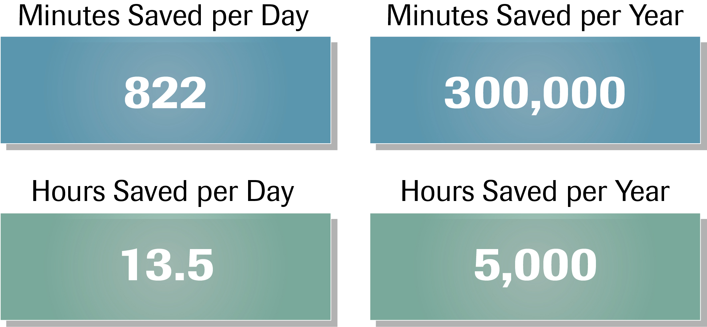

Minutes Matter Calculator
Let's assume Customer X is running 20,000 Troponin tests per year and is able to save 15 minutes in turnaround time per test.
How many additional patients could your ED see per year?
Assume Customer X is running 20,000 Troponin tests per year and is able to save 15 minutes in turnaround time per test (going from 43 to 28 minutes per Troponin).
You can clearly see the amount of minutes saved if all processes remained the same.
How many additional patients could your ED see per year?
- What are the most significant advantages of saving these minutes in turnaround time?
- Would saving these minutes also help you in your relationship with your physicians?
- Tell me how saving these minutes could positively affect your entire organization?